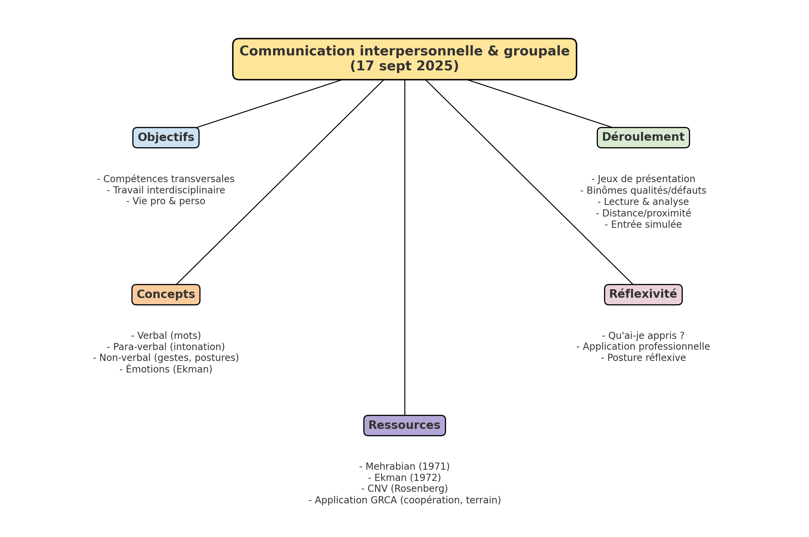

15 Soft skills au service de la gestion des risques
15.1 Objectifs du module
- …
15.2 Plan de cours
- …
15.3 Note de cours détaillée – Communication interpersonnelle et groupale
Date : 17 septembre 2025
Lieu : UNamur
Enseignante : Delphine BROGNA
Cours : Soft skills au service de la gestion des risques et des catastrophes – Module 4
Durée : 24h SEM (partagé avec F. De Longueville, S. Henry, C. Linard)
15.3.1 1. Contexte et objectifs du module
- Développer des compétences transversales essentielles pour :
- le travail interdisciplinaire (Master GRCA),
- la vie professionnelle,
- la vie quotidienne.
- Approche pédagogique : exercices pratiques, expériences de communication, co-construction → apprendre en faisant et en s’observant.
- Méthode d’évaluation :
- Entretien oral réflexif (juin/août) basé sur les observations et la mise en pratique des techniques vues en séance.
- Support attendu : un A3 structurant expériences, observations et apprentissages.
- Entretien oral réflexif (juin/août) basé sur les observations et la mise en pratique des techniques vues en séance.
15.3.2 2. Déroulement de la séance
- Présentation générale du cours et des règles du cadre de travail (confidentialité, respect, posture réflexive).
- Série de jeux et exercices pratiques introduisant les canaux de communication :
Jeu de présentation croisée
- Chaque participant se déplace, se présente (nom/prénom) et remet une partie de dessin au binôme complémentaire.
- Objectif : créer du lien, amorcer une communication verbale simple.
Binômes avec dessins complémentaires
- 3 minutes d’échange mutuel → puis chaque participant présente son binôme au groupe.
- Objectif : travailler l’écoute active et la reformulation.
Jeu de devinettes des prénoms (inversion du 1er exercice).
Qualités en communication
- Chaque duo partage une qualité personnelle.
- Restitution collective → apprentissage par l’autre.
Défauts en communication
- Même logique mais sur les difficultés rencontrées.
- Objectif : prendre conscience des limites personnelles et des leviers d’amélioration.
Exercice de lecture à voix haute
- Deux volontaires lisent un texte ; les autres analysent la communication verbale, non verbale et para-verbale.
- Introduction au triptyque de Mehrabian (1971) :
- Verbal (mots),
- Para-verbal (intonation, rythme, pauses),
- Non-verbal (gestes, posture, expressions).
Analyse des proximités
- Observation des binômes assis côte à côte → lecture des signaux envoyés par la distance/proximité.
Simulation d’entrée dans une salle
- Deux participants entrent et s’installent.
- Les autres identifient les signaux non verbaux envoyés.
15.3.3 3. Apports conceptuels
- Communication non-verbale : langage du corps, posture, distance, gestes, contact visuel, expressions faciales.
- Notion de distance relationnelle : entre indifférence et intrusion, la communication se développe dans l’espace intermédiaire.
- Notion de distance relationnelle : entre indifférence et intrusion, la communication se développe dans l’espace intermédiaire.
- Communication para-verbale : intonation, rythme, volume → révélateurs des émotions.
- Communication verbale : contenu, vocabulaire → importance d’un langage adapté aux situations complexes.
- Émotions de base (Paul Ekman, 1972) : joie, tristesse, colère, peur, dégoût, surprise, mépris → omniprésentes dans la communication.
15.3.4 4. Méthode réflexive
En fin de séance, chaque étudiant est invité à répondre en 5 minutes :
- Qu’ai-je appris ? Quels éléments ont résonné en moi ?
- Application professionnelle : Dans quelle situation ce que j’ai appris peut m’aider ? Comment ?
15.3.5 5. Ressources complémentaires
- Albert Mehrabian (1971) : Silent Messages → importance du non-verbal.
- Paul Ekman (1972) : travaux sur les micro-expressions et les émotions universelles → paulekman.com.
- Livre recommandé : La communication non-violente – Marshall Rosenberg.
- Application au GRCA :
- améliorer la coopération entre experts,
- dialoguer avec les communautés,
- gérer des situations de tension.
- améliorer la coopération entre experts,
 Mindmap – Communication interpersonnelle et groupale (séance 1, 17 sept 2025).
Ce cours organisé en quatre modules a débuté, le 17 septembre 2025 à UNamur avec Delphine BROGNA. Le module 4 intitulé “communication interpersonnelle et inter-groupale” a été à l’ordre du jour. Cette première séance à porté sur l’introduction au canaux de communication.
Le décor a été planté en présentant l’ensemble des modules, en expliquant clairement leur objectif et le mode d’évaluation.
A la suite, les fondements (méthode de travail) du cours ont été exposé et admis par l’ensemble des participants.
Le déroulement du cours s’est faite à travers une serie de jeux.
Le premier à constiter en des marches croiser, et on donne son nom prenoms ou nom à celui qu’on croise. Cela a été répété. Il faut souligner que chaque participant avait en main un dessin dont le complément était détenu par un autre donc à chaque présentation, il fallait remettre à celui à qui on se présente.
Le second jeu à consiter à mettre en binome ceux qui avait des dessin complémentaire, et il a été demandé que chacun parle de lui (3 minutes pour les deux). A la suite chacun est passé présenté son binome.
le jeux suivant a été le contraire du premier, cette fois ci il fallait deviner le nom de l’autre et vise versa.
a la suite ceux qui detenait les dessins complementaires devait échanger, mais cette fois, chacun devait donnés une de ses qualités en communication. Et chacun est passé exposé ce qui a été dit par son binome.
Une fois de plus, le jeux suivant a été le contraire du premier, cette fois ci il fallait deviner le nom de l’autre et vise versa.
Et les duos devrait à présent données un de leur défauts en communication. Et chacun est passé exposé ce qui a été dit par son binome.
S’en est suivie un exercice de lecture, ou deux participants ce sont prétés au jeux et la. Les autres devrait après dire ce qui on retenus de la communication des lecteurs.
Puis on a formé encore des binomes, mais cette fois ci, il a juste été demandé de s’assoir juste ensemble. Une analyse de la manière chaque binome a s’est disposé a été faite.
les derniers jeux, il a été demandé a deux participants de simuler une entré dans la salle jusqu’a s’assoire à une place. Et les autres devrait expliquer ce qui ont remarqué.
Les jeux ont pris fin et l’enseignante à expliqué l’ensembles des diaspo … l’invite fait aux étudiants de prendre le soin en 5 minutes de notre : ❑ Qu’ai-je appris ? Quels éléments ont retenu mon attention, ont fait écho en moi? ❑ Dans quelle situation professionnelle (y. c. travail intégré), ce que j’ai appris aujourd’hui pourrait faciliter les choses (et comment)?
Lien du module 4 : https://drive.google.com/file/d/1EVYS1_SzbI1LPoc6gP8V21MtxrHmH6f6/view?usp=sharing